FRAYNIX / LOCAL JAVA / MEASURED EXPERIMENT MEMORY
Does a remembered experiment
earn its reconstruction cost?
Three methods. The same new scenes, target poses and force limits. Every reconstruction, failed alternative and fresh execution counts.
Measured outcome, including the simpler control
Primary work is charged native ticks. Measured active wall time includes per-task lookup, planning, native trials and checks. Bank preparation and final audit are separate overheads; historical costs not present in the receipts remain unknown. The utility weight is a declared accounting preference.
Case-level evidence
Inspect actual retained motion
Top projection · X / Z metres
Object A · X position over time
Original native positions and orientations. The source may be the older memory during reconstruction or the new scene during a forecast/actual run. This page cannot actuate either world.
One system, a measured decision
SourceOwned verified memories → frozen bank → new source and targets → matched-budget comparison → original native checks → retained evidence. The comparison does not automatically promote a controller or rewrite the active world.
Actual app screenshots
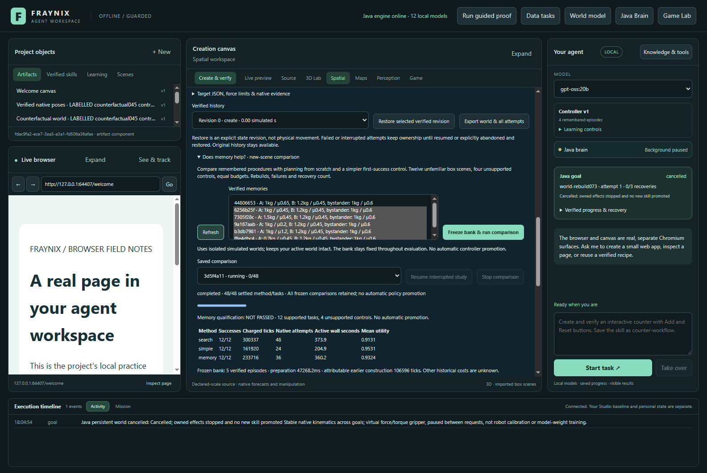
comparison-results · isolated labelled synthetic app · November 5, 2026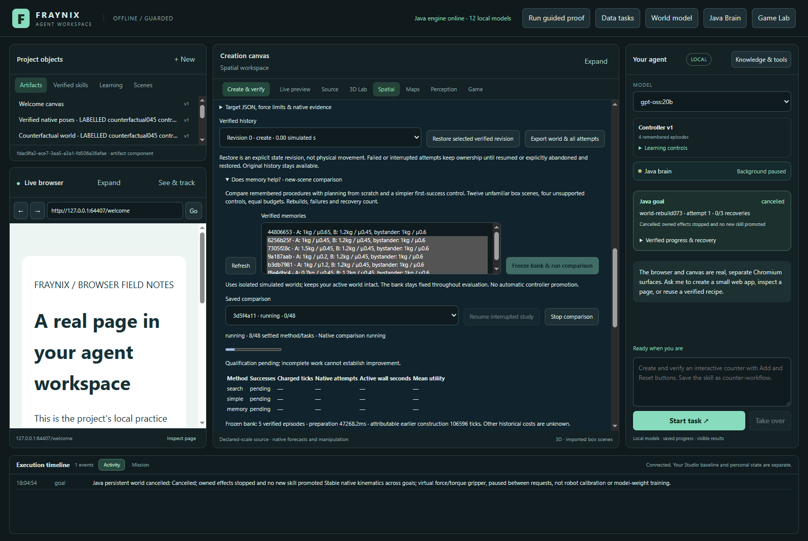
comparison-running · isolated labelled synthetic app · November 5, 2026final-comparison-results · isolated labelled synthetic app · November 5, 2026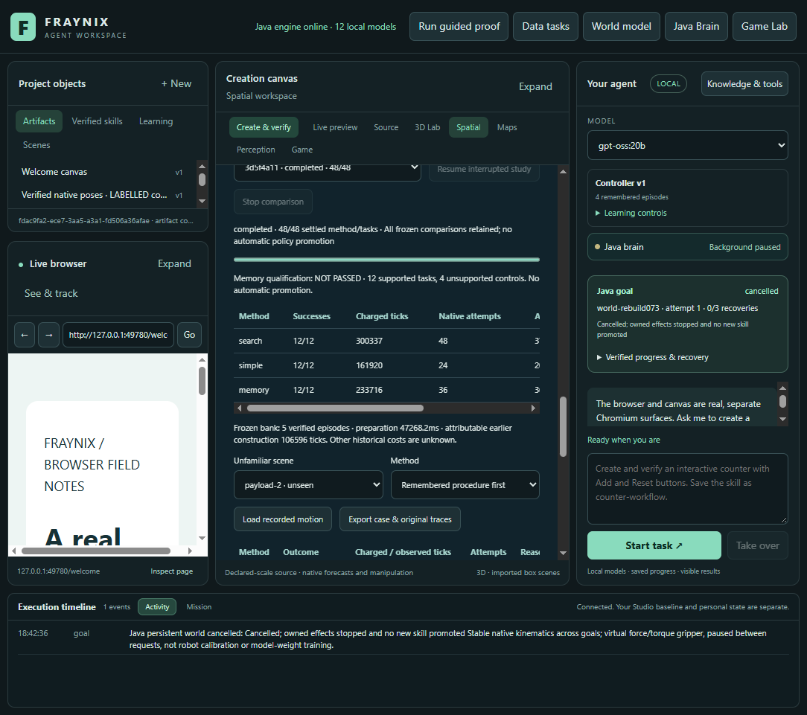
final-layout-1100 · isolated labelled synthetic app · November 5, 2026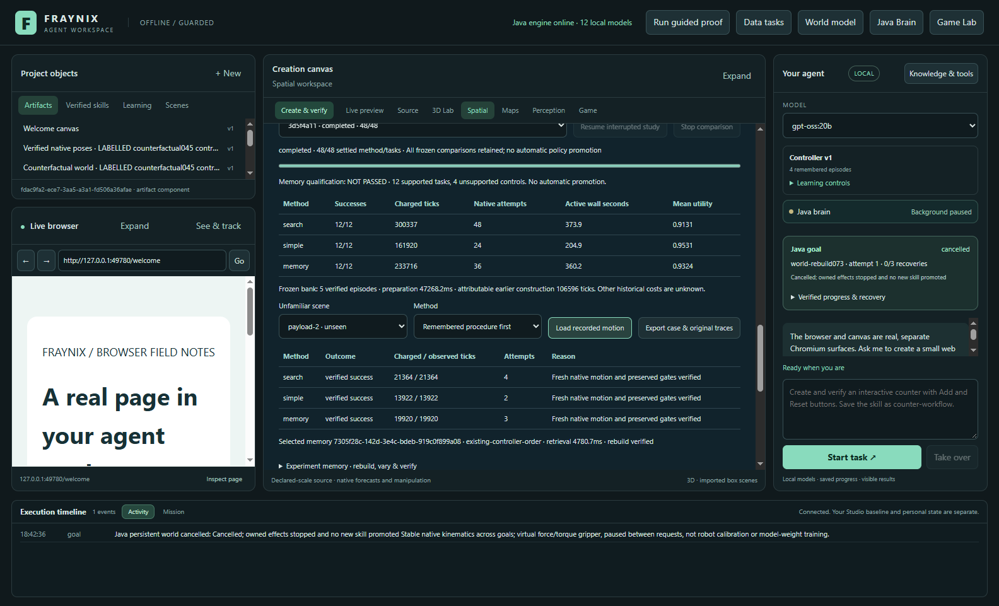
final-layout-1600 · isolated labelled synthetic app · November 5, 2026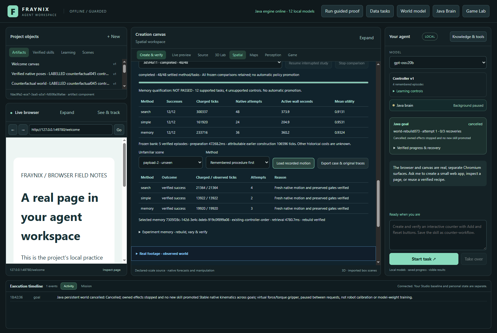
final-payload-costs · isolated labelled synthetic app · November 5, 2026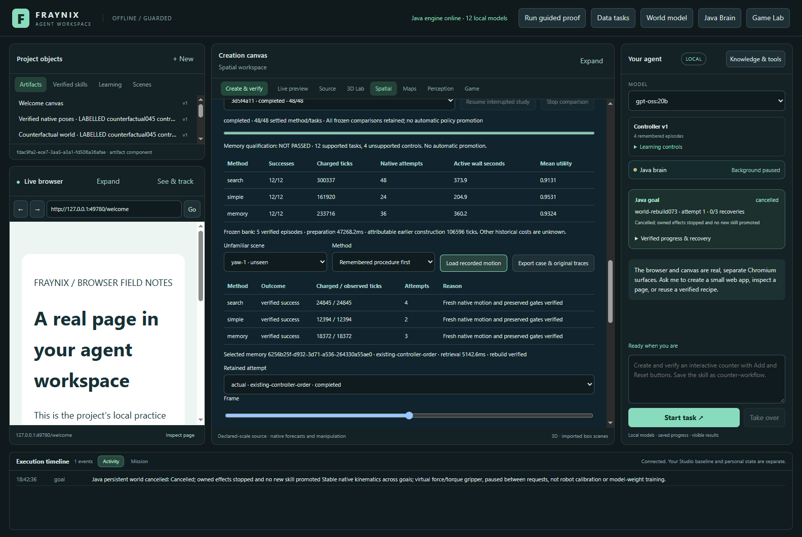
final-yaw-replay · isolated labelled synthetic app · November 5, 2026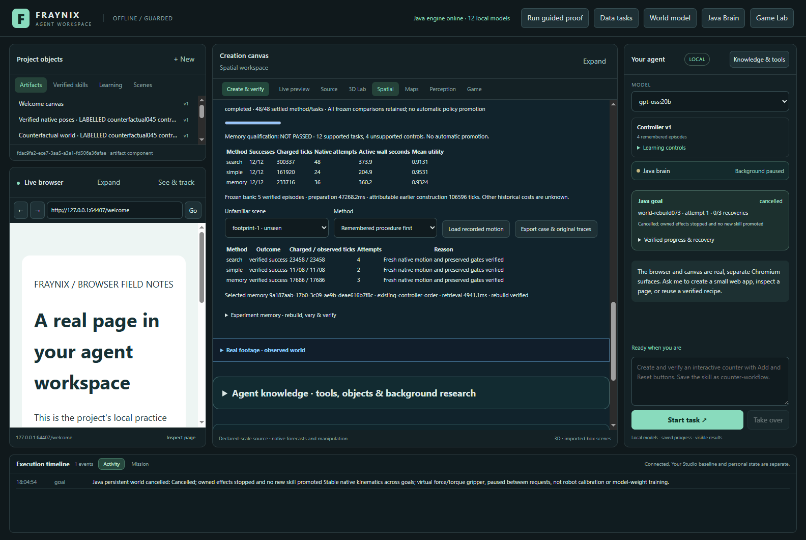
footprint-1-costs · isolated labelled synthetic app · November 5, 2026footprint-1-replay · isolated labelled synthetic app · November 5, 2026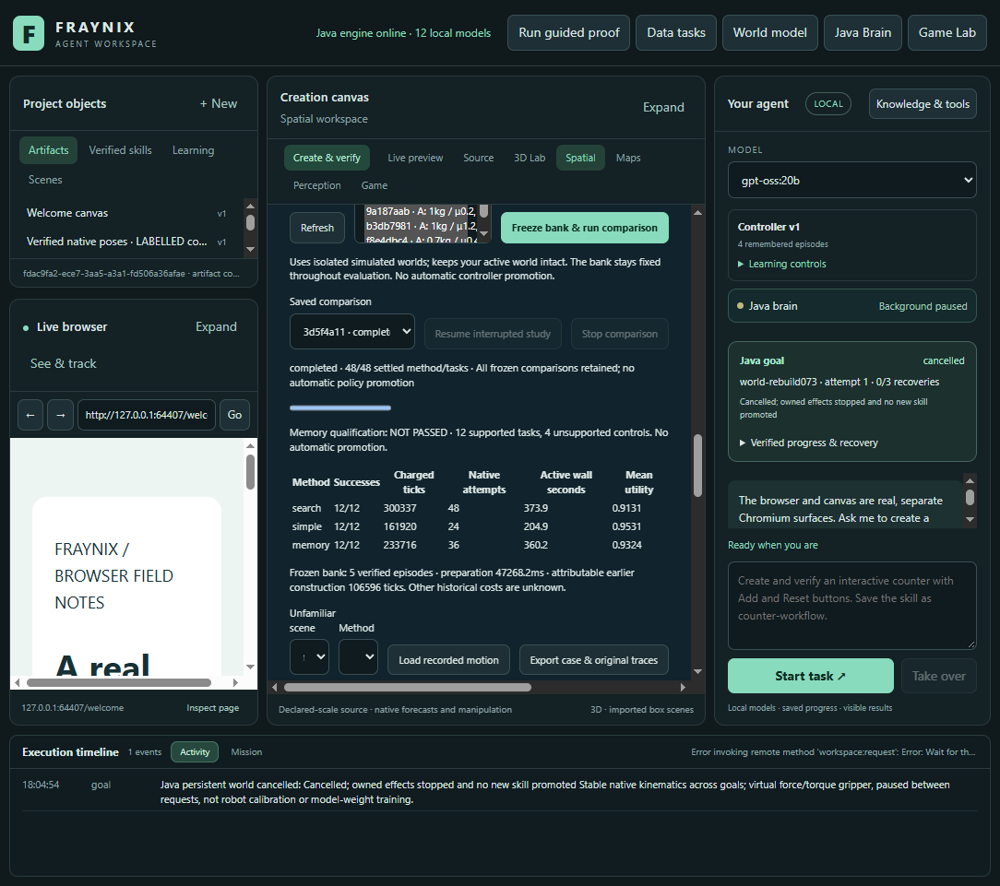
layout-1100 · isolated labelled synthetic app · November 5, 2026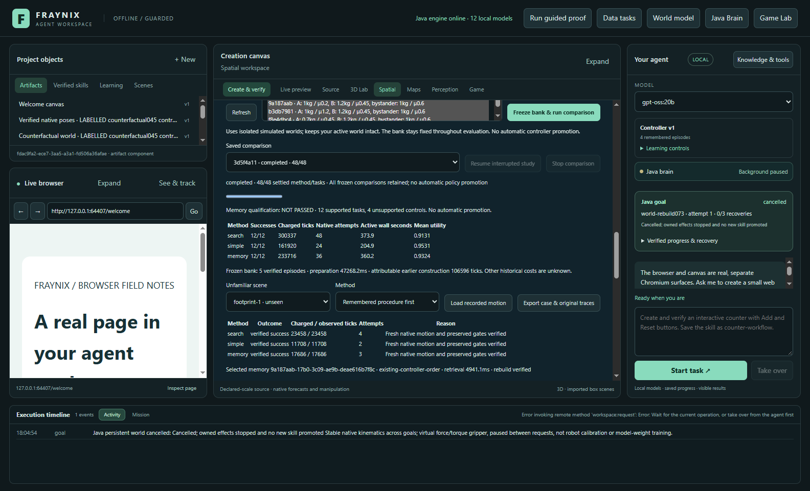
layout-1600 · isolated labelled synthetic app · November 5, 2026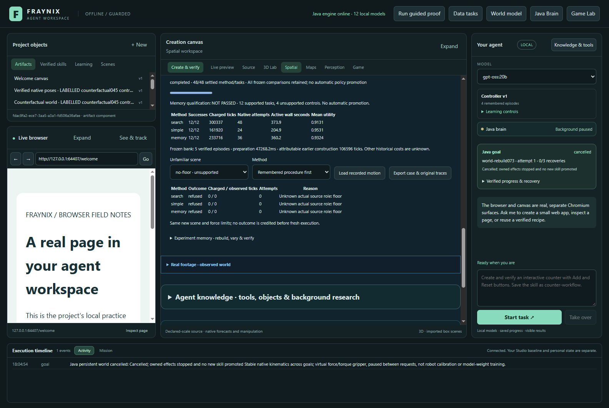
no-floor-costs · isolated labelled synthetic app · November 5, 2026payload-2-costs · isolated labelled synthetic app · November 5, 2026yaw-1-costs · isolated labelled synthetic app · November 5, 2026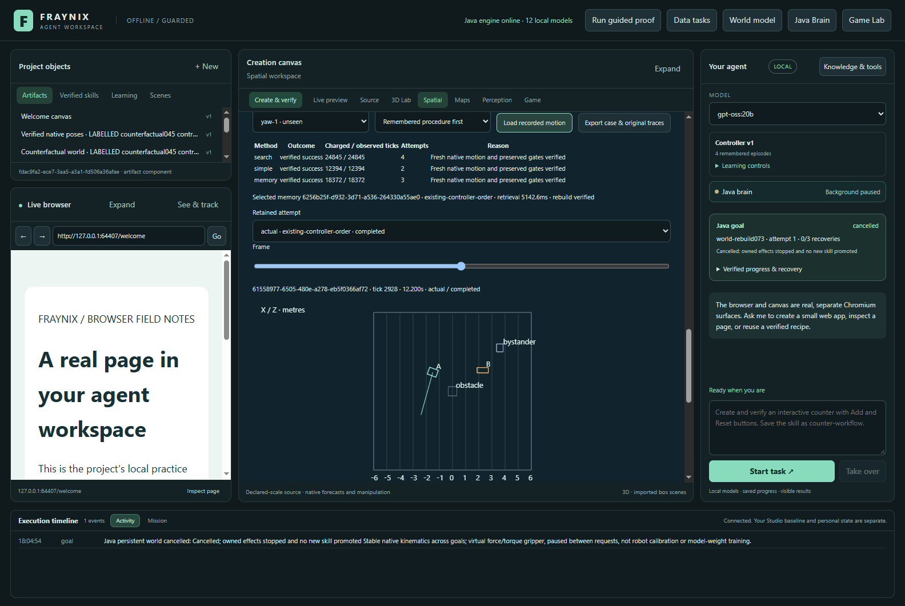
yaw-1-replay · isolated labelled synthetic app · November 5, 2026
Next gates
Use the observed failure and cost patterns to design the next prospective test. Investigate when an original reconstruction can safely be reused across compatible tasks, and when experience actually changes the chosen procedure. Keep the simple control, unfamiliar cases, complete costs and rollback. These declared native box experiments establish neither physical-camera accuracy nor general intelligence or LLM-weight training.